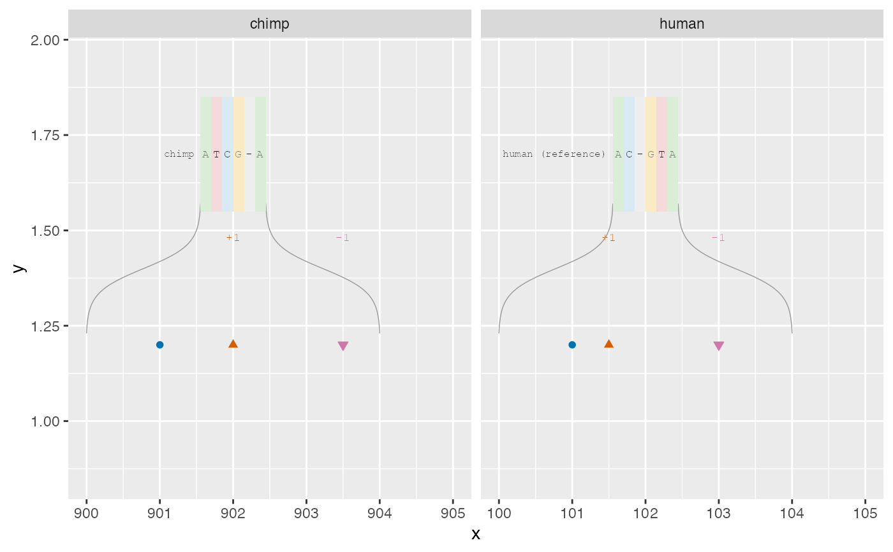

Convert two already aligned DNA strings into an inspectable table for
geom_alignseq(). No alignment is inferred. Coordinates are one-based base
centres; gaps do not consume genomic bases and are anchored at the adjacent
half-base boundary. Insertions and deletions describe the other sequence
relative to the explicitly named reference, not evolutionary direction.
Arguments
- aligned
Named character vector of exactly two equal-length aligned DNA strings. Use
-for gaps. IUPAC ambiguity codes are retained and markedambiguous, rather than called verified substitutions.- anchors
Data frame with one row per sequence and columns
sequence,start,strand.startis the genomic coordinate of the first non-gap character in the supplied orientation;strandis+or-. Strings on the minus strand must already be oriented for comparison. Optionaltrack,chr, andycolumns control annotation-panel placement. Defaults are the sequence name,NA, and 1, respectively. Anchors describe contiguous DNA, not spliced transcript sequence.- reference
Name of the reference in
aligned.- regions
Selected reference-coordinate windows: a numeric start/end pair or a data frame with
start,end.NULLretains the whole alignment. A gap column is selected by its half-base reference anchor.- details
Explicit reference-coordinate windows for DNA callouts, in the same format as
regions.NULLadds no callouts. Nearby windows merge when their expanded alignment-column ranges overlap or touch. Detail is restricted to the selected regions and split wherever columns are omitted.- flank
Nonnegative integer number of aligned columns added on each side of each detail window.
Value
A data frame, one row per sequence per selected aligned column, with
x, y, track, position (NA at gaps), column, base, event_type,
event_id, event_length, reference_x, and detail_id. Contiguous indel
columns form one event; each substitution is one event. Matching columns
have no event ID. Rows also retain both aligned bases and sequence names
for matched-column comparison. Empty selections return a typed empty table.
Examples
dna <- c(human = "AC-GTAC", chimp = "ATCG-AC")
anchors <- data.frame(sequence = names(dna), start = c(100, 900), strand = "+")
d <- alignseq_data(dna, anchors, reference = "human",
details = c(101, 103), flank = 1)
ggplot2::ggplot() + geom_alignseq(data = d) +
ggplot2::facet_wrap(~track, scales = "free_x")
